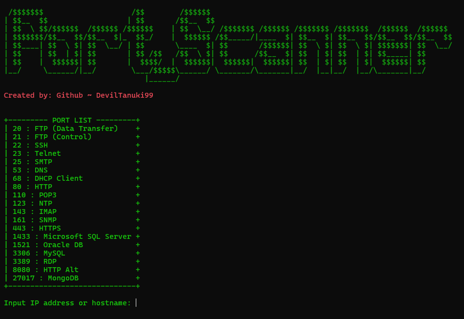
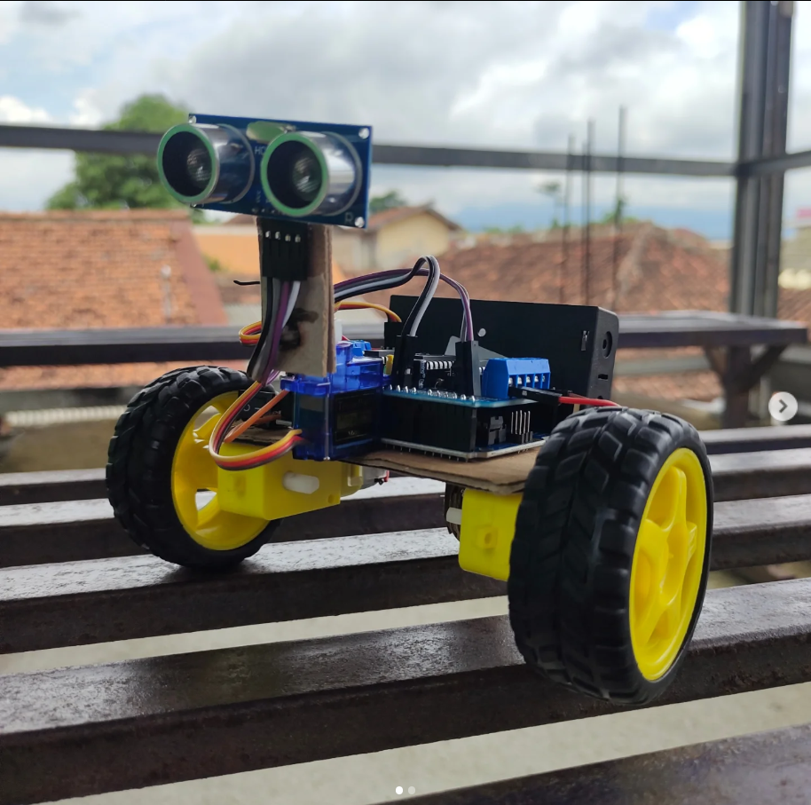
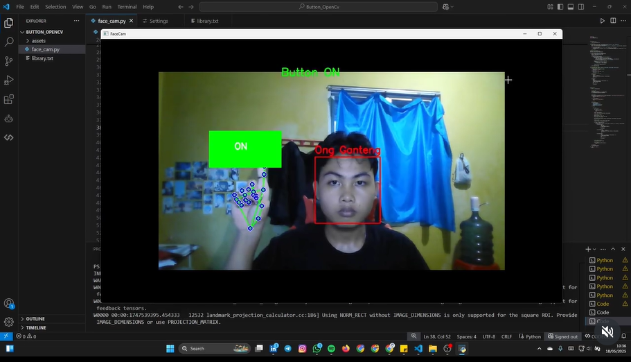
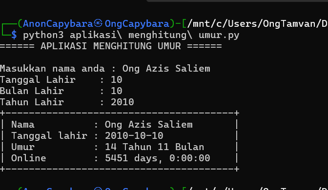
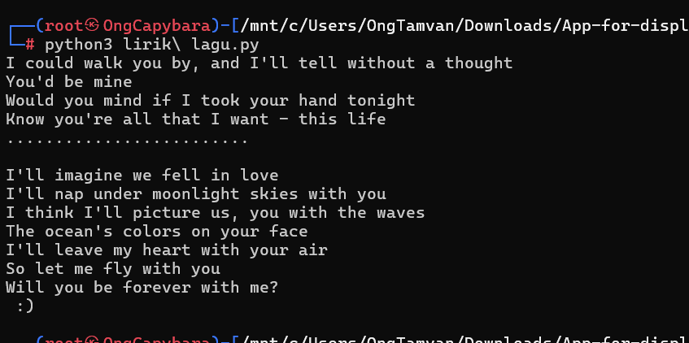
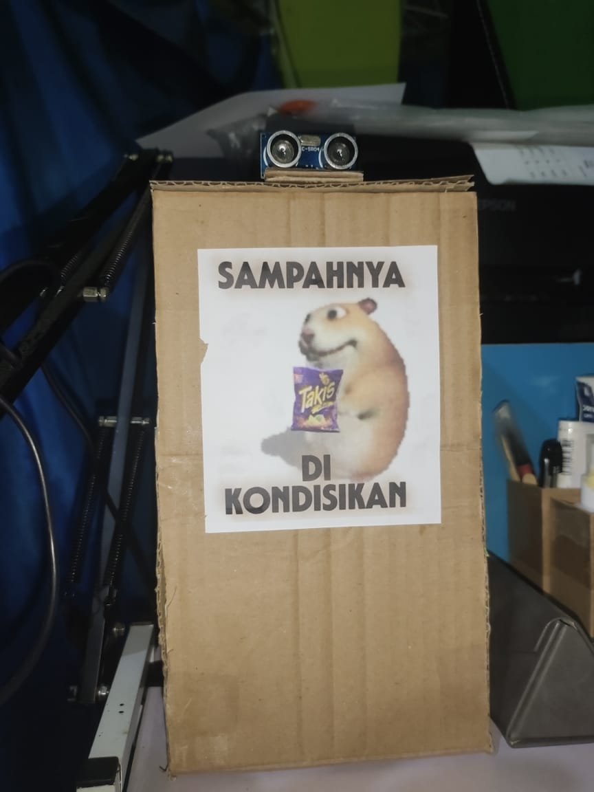

My Projects
Click a category or search to find projects
Port Scanner
A tool for testing ports such as Nmap

See More
Uiiai Robo
Robots using Arduino microcontrollers, modules, motors, and servos

See More
Base Family
Multi-purpose tools if you wanna use base encode-decode
 See More
See More
Face and Hand Detector
Face and hand detection with button automation feature

See More
Talkzone
I make that's app using flutter framework and dart programming language with firebase as databases
 See More
See More
Age Calculator
A calculator for prediction your age right now :D

See More
Displayer Lyrics
That's code contains all the function for displaying song lyrics as you wish

See More
Automatic Trash Can
Trash robo using arduino uno, HC-SR04, servo, and any DIY items :D. Actually, im just wanna reduce trash in my room lol

See More
See the shape here